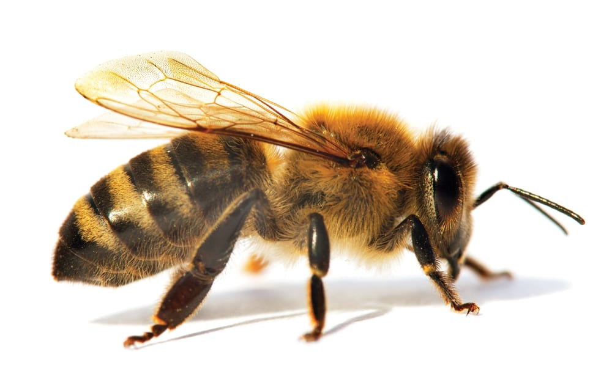
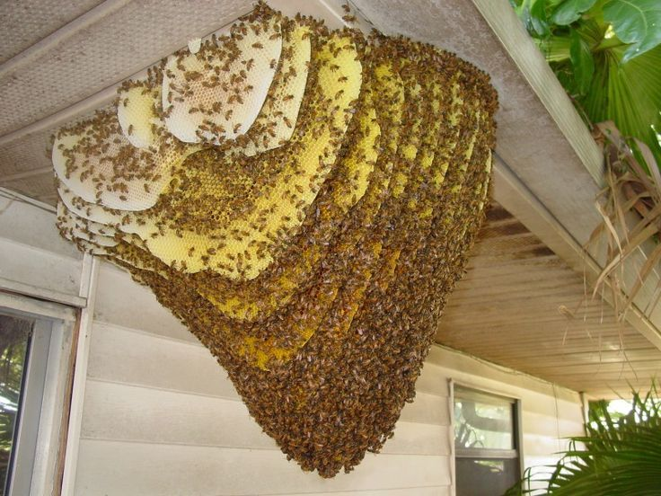
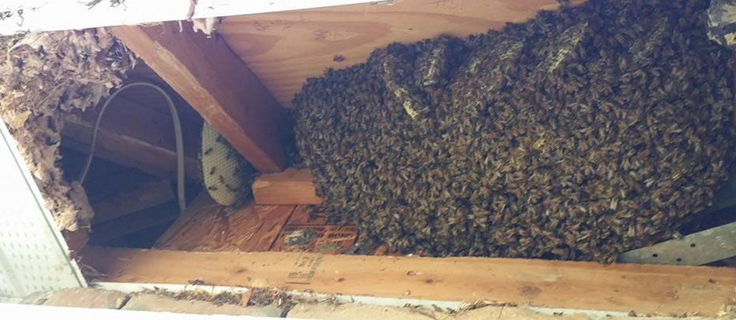
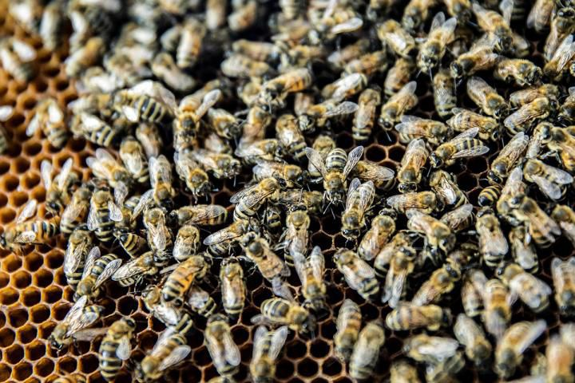
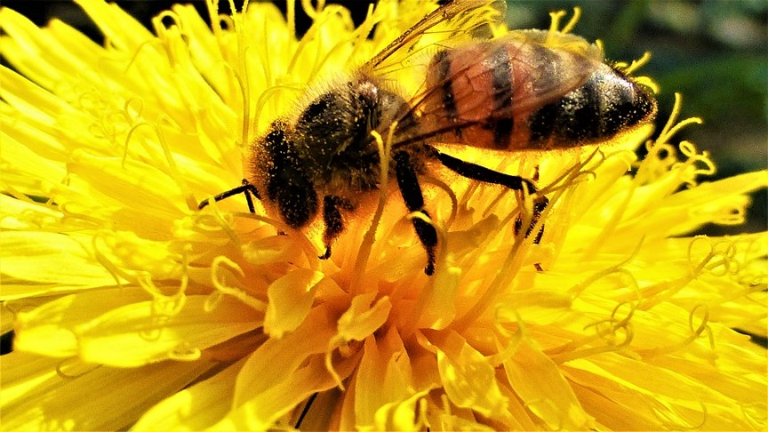
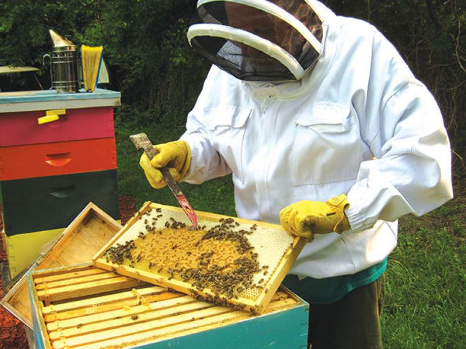
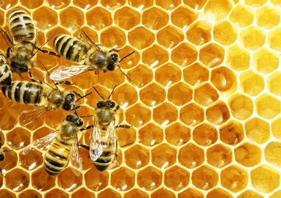
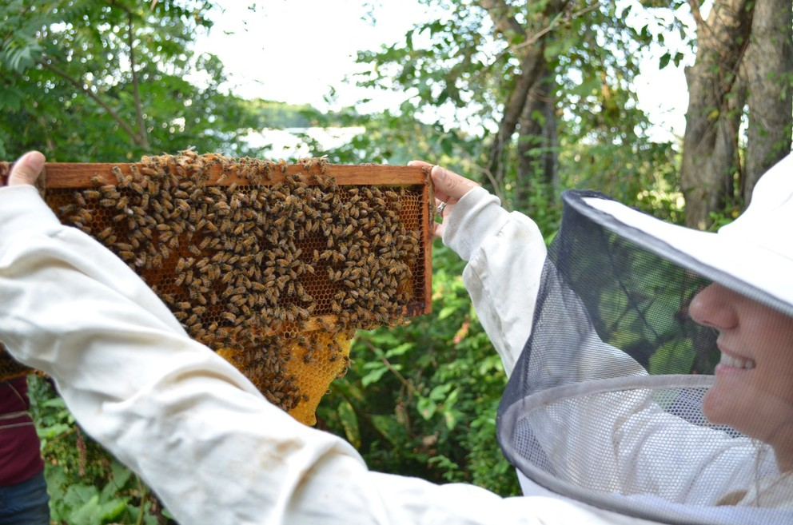

Honey Bee Problem?

If you have honeybees in your house or a structure, please contact Honey Bee Rescue to determine the needs of your honey bee removal. Honey bees in a house can trigger a great deal of problems, because of the quantity of honey that they save. One honey bee hive has approximately 80,000 bees inside it and can store numerous pounds of honey in your walls.
The wax, honey and bees need to be gotten rid of by a professional. We have actually done hundreds of bee removals in Massachusetts and are insured and experienced. We conserve the bees, removing them live, remove the comb and honey and seal up and repair the space so that bees can no longer get in your home or structure. We do chimneys, walls, structures, apartment or condos, trees, wherever you have a problem with bees. Many homeowners mistake what pest is around their home and actually need wasp removal services, rather than honey bee removal.
Damaged Caused By Honey Bees

While they may look frightening, bees that are swarming and carrying honey from their old hive are much less protective or less likely to sting than they would be if they were securing brood (immature bees) at the old hive. They shouldn’t present much risk if left undisturbed however will sting if provoked.
Once bees end up being developed, they will start to build combs for rearing brood and storing food. Colonies might do structural damage to a building, sometimes they use water to soften Sheetrock and remove it in order to expand the nesting area. Residents then will observe an enlarging damp area on their wall. In a few cases, the bees really open a hole through the Sheetrock so that foragers get away into your house, bothersome or terrifying residents. If the colony is killed and not right away eliminated, honey will ferment and leakage through walls and ceilings, causing damage.
Swarm

Occasionally a colony will divide and create what is called a swarm. The colony’s queen will create another queen. This new queen will become the egg layer for the colony and the initial queen will leave the colony with around half of the colony members. The swarm will then search for a suitable site to create a new hive. These swarms will look like a cloud and after that arrive on a things as a big mass while scouts hunt for a new place to call home.

We get lots of calls each year for these swarms of bees that can include 20,000 or more bees. Swarms do not require to be treated since they will normally move on as soon as a hive place is chosen. It is possible to have a swarm caught alive by a bee keeper. As long as they don’t decide to move into a void in your house we suggest being patient, prevent the area and permit them to go on their way.
How We Relocate, Remove & Control Honey Bees

We try to move the bees on a cooler day because they will be inside of the hive rather than flying around. Of course, we will relocate the bees at anytime and try to save as many of the bees as possible. First the process begins with our bee keeper inspection. The keeper will survey the hive and determine how many bees are present, their temperament, and attempt to locate the queen bee.
Next the bee keeper will suit and establish the mobile hives (mobile storage for the bees). The keep will then locate the queen bee and place her into the mobile hive. The rest of the bee colony will follow the scent of the queen bee and enter the mobile hive. Our bee keeper will also scoop and place bees into the mobile hive to speed up the process. Once majority of the colony is in the mobile hive, it will be sealed and placed into one of our trucks to be relocated.
Why We Relocate The Bees

Bees play an essential function in the world because they pollinate plants and crops. Sadly, it has been discovered that bee populations appear to be reducing because of broadening cities and new home building. The areas where they are used to pollinating are being disturbed by humans. The honey bees are beginning to develop their nests on or near structures in order to survive. Why not follow a thoughtful method to fixing your live bee problem by having them removed and relocated instead of using hazardous pesticides to kill them?
Find A Bee Keeper

We understand that having bees near or in the home can be frightening and we suggest to contact us if you are experienced in bee removal. Bee removal should be done by an experienced keeper to ensure the safety of the persons doing the removal and the safety of the bees. Check out the map below to see if you are within our service area.